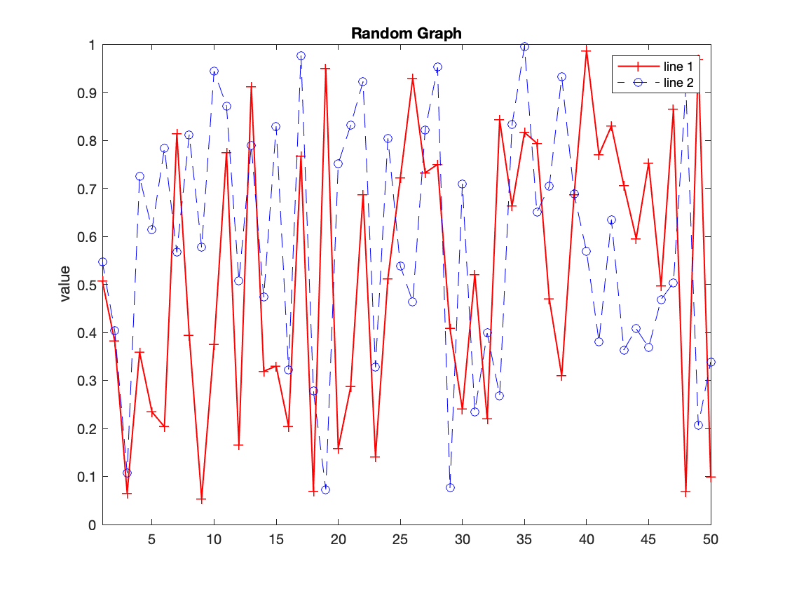

MATLAB Guide¶
This is an elegant-design to MATLAB, geared mainly for new users. You can see more complex recipes at MATLAB.
As for getting help, MATLAB uses help func to get documentation on the function func within the command window, and uses doc func to open the documentation page with external browser. Also, it uses type func for user-defined source code.
Object creation¶
Several methods to create Numpy arrays are available, and we should contain homogeneous elements only for optimal efficiency. The simplest way is
>> [3 5] % row vector
>> [3;5] % column vector
>> [1, 2, 3; 4, 5, 6] % matrix
>> ndims(a) # number of dimensions
>> numel(a) # number of elements
>> size(a) # shape of matrix
Preallocation is an option for the growth acceleration of arrays
>> rand(n) % square matrix with n rows and n cols
>> zeros(m, n) % matrix with m rows and n cols
>> ones(n) % square matrix with n rows and n cols
>> eye(n) % identity matrix
>> diag(n) % 2D diagonal matrix
In addition, we could use : and linspace to create evenly spaced vectors, and both methods’ end parameter is border-inclusive
% start : space : end
>> 0 : 1 : 6
% linspace(start, end, steps)
>> linspace( 0 , 6 , 7 )
The results for above two methods are the same: a list of size seven counting from zero to six.
Use meshgrid to generate grid for optimal efficiency which generates two 2D matrices with identical shape
>> [x, y] = meshgrid(0:2, 0:3)
x = 0 1 2
0 1 2
0 1 2
0 1 2
y = 0 0 0
1 1 1
2 2 2
3 3 3
In order to make a deep copy, direct assigning the result to a new variable.
Object indexing¶
The common method to index an array is a(start:step:stop). If we want to access the last element, use end logical value.
>> y(1:2:end, :)
ans = 0 0 0
2 2 2
>> y(1, 2) = 5 % change value
y = 0 5 0
1 1 1
2 2 2
3 3 3
Logics & boolean mask¶
Numpy uses and & , or |, and not ~ for logical operations with application for boolean mask
>> y(y >1)'
ans = 2 3 5 2 3 2 3
>> y((y < 3) | (y > 4))'
ans = 0 1 2 5 1 2 0 1 2
>> y(y > 1 & y < 3)'
ans = 2 2 2
>> mask = ~(y < 3)
mask = 0 1 0
0 0 0
0 0 0
1 1 1
>> y(mask)
ans = 3 5 3 3
Use find to generate indices that met the condition to the original ndarray
>> criteria = find(y > 2) % indices
criteria = 4 5 8 12
>> y(criteria)
ans = 3 5 3 3
Now we illustrate the if and for loops
if x < 0
y = -1
elseif x == 0
y = 0
else
y = 1
end
for i = 1:3
fprintf('%i\n', i)
end
Mathematics¶
Element-wise operations with broadcasting concept include +, -, .*, .^, ./ , sqrt, exp, log, [trigonometry], floor, ceil, round, etx. Column-wise operations include max, min, sum, mean, median, std, var, all, any, .' for transpose, ' for conjugate transpose, etc. Use * for matrix multiplication.
>> sqrt(y)
ans = 0 2.2361 0
1.0000 1.0000 1.0000
1.4142 1.4142 1.4142
1.7321 1.7321 1.7321
>> [1 1; 1 1]*[2 2;2 2]
ans = 4 4
4 4
>> [1 1; 1 1].*[2 2;2 2]
ans = 2 2
2 2
>> mean(y)
ans = 1.5000 2.7500 1.5000
some functions above have polymorphism for multiple outputs
>> [nrow, ncol] = size(x)
>> [xMax, idx] = max(x)
Manipulation¶
Stack matrices are easy in MATLAB, either vertical or horizontal
>> a = [0, 1, 2]
>> b = [3, 4, 5]
>> [a b] % horizontal
ans = 0 1 2 3 4 5
>> [a;b] % vertical
ans = 0 1 2
3 4 5
Plot¶
The easiest way to plot is using plot(x, y[, "format", *args]). Use the command hold on to draw multiple lines on the same canvas, and use the command hold off to create a new axes for the next plotted line.
>> x = (1:1:50)
>> y1 = rand(50, 1)
>> y2 = rand(50, 1)
>> plot(x, y1, "r-+", "LineWidth", 1)
>> hold on
>> plot(x, y2, "b--o")
>> title("Random Graph")
>> ylabel("value")
>> legend("line 1", "line 2")
>> xlim([1 50])
>> hold off
A possible output for the code above could be
{kind=link}
Desktop management¶
save file: save current workspace to file.matload file: load variables in file.mat to the workspaceclear: clear all variables from the workspaceclc: clear all text from the Command Windowformat long/short: set how numeric output is displayed (15 digits or 4 as default)